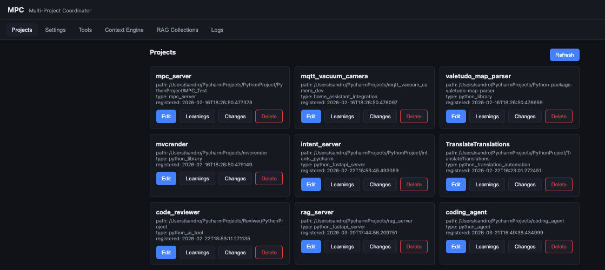

This is the memory of the system, and it comes with its own web GUI. It runs as
a container and serves a browser interface at the container's address — for example
http://localhost/ui. From there you manage the projects the agent knows about,
inspect what it has indexed, and watch what it is doing — all on your own machine.
The Project Context runs as a container. Once it is up, open a browser on the same machine and
go to its address — the GUI is served under /ui:
http://localhost/ui.
A project is a folder the agent is allowed to understand and work in. The Projects tab is where you register them and keep them tidy:
The Context Engine tab lets you look at, and try, what the agent uses on every task — an indexed model of the project rather than a blind file read. From here you can browse a project's symbols and run a retrieval query yourself to see exactly what the agent would get back.
Retrieval is backed by a self-hosted store, and the RAG Collections tab is your window into it. Each project's indexed code and knowledge lives in its own collection, and it holds more than source:
Everything here is computed and stored on your machine — the full codebase is never sent anywhere.
The Tools tab lists the actions the Project Context makes available to the agent through the Gateway — searching the context engine, reading a project's learnings and history, recording changes. The Settings tab holds the server's own configuration.
An index is only useful if it matches the code on disk. The Project Context stays in sync with a companion file watcher that runs on each of your machines:
The Logs tab shows what the server is doing in real time — registrations, indexing activity and queries — so when something looks off, you can see why without leaving the browser.
Turning code into a searchable index is the compute-heavy part, and it runs best with a GPU. IDEAgent runs on CUDA-capable NVIDIA machines and on boxes with shared-memory GPUs — laptops and Macs — but the two are not equal:
Everything here is local: indexing runs on-device, the collections live in a store you host, and retrieval returns only the small, relevant slices the agent needs. The full codebase is never transmitted anywhere. Paired with a local Ollama provider on the Gateway, no code or context leaves your machine at all.